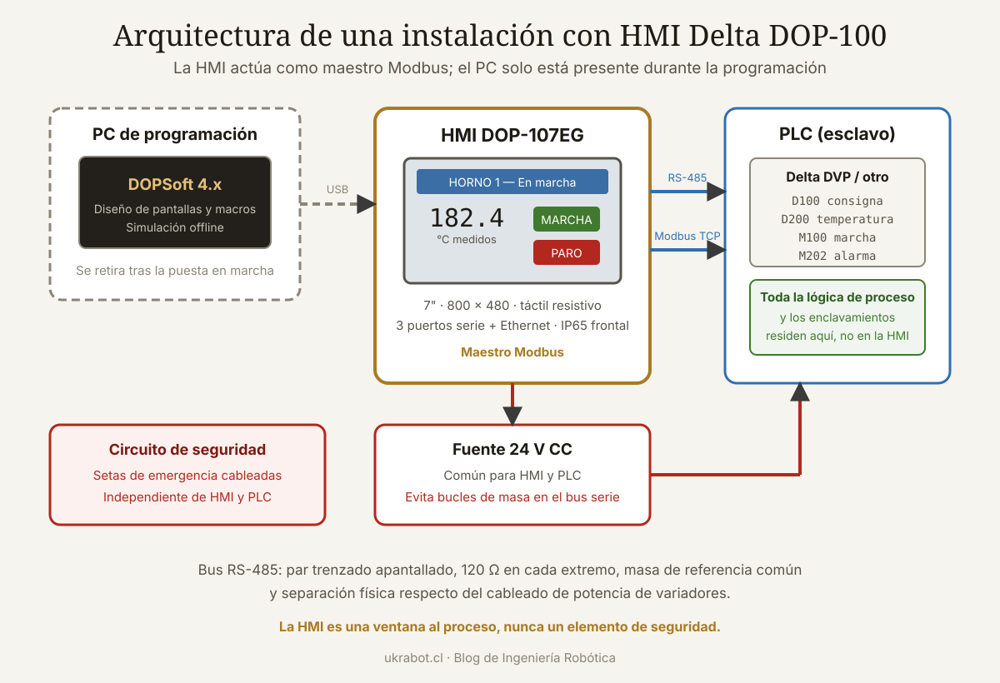

Qué cubre esta guía
- La serie DOP-100: qué modelo elegir
- Montaje, alimentación y primer arranque
- DOPSoft: el entorno de programación
- Comunicación con el PLC: Modbus paso a paso
- Diseño de pantallas eficaces
- Macros: lógica dentro de la HMI
- Alarmas, recetas y registro de datos
- Ejemplo completo: control de un horno
- Conclusión
- Preguntas frecuentes
La serie DOP-100: qué modelo elegir
Delta Electronics reemplazó la veterana serie DOP-B por la DOP-100, con procesadores más rápidos, pantallas de mejor calidad y un entorno de programación renovado. La lógica de nomenclatura es sencilla una vez que se entiende.
DOP - 1 07 W V
│ │ │ └── Variante (V = estándar, otras según opciones)
│ │ └──── Formato: W = panorámico (widescreen)
│ └─────── Tamaño de pantalla en pulgadas
└────────── Serie 100| Modelo | Tamaño | Resolución | Puertos serie | Ethernet | Uso típico |
|---|---|---|---|---|---|
| DOP-103BQ | 4,3" | 480 × 272 | 2 (COM1, COM2) | No | Máquina simple, pocos parámetros |
| DOP-107BV | 7" | 800 × 480 | 3 | No | El más vendido; buen equilibrio |
| DOP-107EG | 7" | 800 × 480 | 3 | Sí | Integración con SCADA o varios PLC |
| DOP-110CS | 10,1" | 1024 × 600 | 3 | Sí | Líneas con muchas pantallas de proceso |
| DOP-112MX | 12" | 1280 × 800 | 3 | Sí | Supervisión de planta |
Características comunes de la serie
- Alimentación 24 V CC (rango típico 20,4 a 28,8 V), consumo del orden de 5 a 12 W según modelo.
- Pantalla táctil resistiva: funciona con guantes, algo importante en entorno industrial.
- Ranura para tarjeta SD y puerto USB anfitrión para registro de datos y transferencia de proyectos.
- Grado de protección IP65 en el frontal cuando se monta correctamente con su junta.
- Reloj de tiempo real con batería para sellado temporal de alarmas y registros.
Montaje, alimentación y primer arranque
Recorte de panel y montaje
Cada modelo tiene una cota de recorte específica que debe respetarse con tolerancia de décimas de milímetro. Un recorte generoso arruina el sellado IP65 del frontal.
Cotas orientativas de recorte (verificar siempre en el manual del modelo):
DOP-103BQ → 119,0 × 93,0 mm
DOP-107BV → 192,0 × 138,0 mm
DOP-110CS → 259,0 × 179,0 mm
Montaje:
1. Colocar la junta de goma en el marco de la HMI
2. Insertar desde el frente del tablero
3. Fijar con las grapas suministradas, apretando en cruz
4. No sobreapretar: deforma el marco y rompe el selladoAlimentación
- Conecta el borne de tierra funcional (FG) al chasis del tablero con cable corto y de sección adecuada. Sin esta conexión, el táctil puede comportarse de forma errática con variadores cerca.
- Alimenta la HMI desde la misma fuente de 24 V que el PLC cuando sea posible, para evitar bucles de masa en la comunicación serie.
- Si el tablero contiene variadores de frecuencia, separa físicamente el cableado de 24 V y de comunicación del cableado de potencia. Los criterios generales están en la guía de gestión de cables en tableros y brazos.
Primer arranque y configuración del sistema
Al energizar por primera vez, la HMI arranca con un proyecto vacío. Para acceder al menú del sistema se mantiene pulsada una esquina de la pantalla durante el arranque, o se pulsa el área de configuración según el modelo. Desde ahí se ajustan:
- Idioma de la interfaz del sistema.
- Dirección IP si el modelo tiene Ethernet (fija, nunca DHCP en un entorno industrial).
- Brillo, tiempo de apagado de retroiluminación y calibración del táctil.
- Fecha y hora del reloj interno.
DOPSoft: el entorno de programación
DOPSoft es el software gratuito de Delta para programar la serie DOP. Se descarga desde el portal de descargas del fabricante y funciona en Windows.
Estructura de un proyecto
Proyecto DOPSoft
├── Configuración de HMI → modelo, orientación, resolución
├── Enlaces de comunicación → Link 1, Link 2... (uno por dispositivo)
├── Pantallas (Screens) → numeradas; la 1 es la de arranque
│ ├── Elementos gráficos
│ ├── Botones y entradas
│ └── Macros de pantalla
├── Macros globales → inicial, de fondo, de reloj
├── Alarmas → tabla de condiciones y mensajes
├── Recetas → grupos de parámetros
└── Configuración de seguridad → niveles y contraseñasFlujo de trabajo recomendado
- Definir el enlace de comunicación primero. Todo lo demás depende de las direcciones que puedas referenciar.
- Diseñar la navegación antes que las pantallas concretas: cuántas hay y cómo se pasa de una a otra.
- Construir una pantalla plantilla con la barra superior, el pie y los botones de navegación, y copiarla para las demás. Mantiene la coherencia visual.
- Simular en el PC (modo offline) antes de descargar a la HMI: ahorra muchísimo tiempo.
- Descargar y probar contra el PLC real.
Comunicación con el PLC: Modbus paso a paso
La HMI actúa normalmente como maestro Modbus y el PLC como esclavo. La configuración se hace en el apartado de enlaces del proyecto.
Modbus RTU sobre RS-485
Parámetros que deben coincidir EXACTAMENTE en ambos extremos:
Velocidad (baudios) : 9600, 19200, 38400, 115200
Bits de datos : 8 (o 7 en algunos equipos antiguos)
Paridad : Ninguna / Par / Impar
Bits de parada : 1 o 2
Dirección de esclavo: 1 a 247
Formato : RTU (binario) o ASCII
Configuración de partida habitual con PLC Delta:
9600, 7, Par, 1, ASCII ← valor de fábrica de muchos DVP
115200, 8, Ninguna, 2, RTU ← configuración de mayor rendimientoMapeo de direcciones
| Tipo Modbus | Rango clásico | Equivalente en PLC Delta DVP | Acceso |
|---|---|---|---|
| Coil (bobina) | 0xxxx | M0 - M1535, Y0 - Y377 | Lectura y escritura de bit |
| Discrete input | 1xxxx | X0 - X377 | Solo lectura de bit |
| Input register | 3xxxx | Registros de solo lectura | Solo lectura de palabra |
| Holding register | 4xxxx | D0 - D11999 | Lectura y escritura de palabra |
Ejemplo de mapa de una máquina sencilla:
D100 → Consigna de temperatura (× 10, en décimas de grado)
D101 → Temperatura medida (× 10)
D102 → Contador de piezas producidas
D110 → Palabra de estado (bits de máquina)
M100 → Orden de marcha desde HMI
M101 → Orden de paro desde HMI
M102 → Reconocimiento de alarma
M200 → Bit de máquina en marcha (PLC → HMI)
M201 → Bit de alarma activa (PLC → HMI)Modbus TCP sobre Ethernet
Más simple de cablear y considerablemente más rápido. En los modelos con Ethernet:
- Asigna IP fija a HMI y PLC en la misma subred (por ejemplo 192.168.1.10 y 192.168.1.20).
- Puerto 502, el estándar de Modbus TCP.
- Unit ID normalmente 1, aunque algunos gateways requieren otro valor.
- Verifica la conectividad con un ping desde el PC antes de culpar a la configuración de la HMI.
Diagnóstico cuando no comunica
- ¿Aparece un mensaje de error de comunicación en pantalla? Anota el código exacto.
- Verifica que los parámetros serie coinciden dígito a dígito en ambos extremos.
- Prueba a intercambiar D+ y D−: es el fallo más común y es inofensivo probarlo.
- Confirma la dirección de esclavo del PLC. Muchos vienen con dirección 1 pero no todos.
- Usa un PC con un cliente Modbus para hablar directamente con el PLC y aislar dónde está el problema.
- Comprueba que el PLC tenga habilitada la comunicación en ese puerto: en muchos modelos hay que configurarla en registros especiales del programa.
Diseño de pantallas eficaces
Una HMI mal diseñada es peor que no tener HMI: induce errores de operación. Estos criterios provienen de la práctica industrial y de las recomendaciones de la norma ISA-101.
| Principio | Aplicación concreta |
|---|---|
| Fondo neutro | Gris claro, no negro ni blanco puro. El color debe reservarse para el significado |
| El color comunica estado | Rojo solo para alarma, amarillo para advertencia, verde para condición normal |
| Jerarquía de pantallas | Vista general → área → detalle. Nunca más de tres niveles de profundidad |
| Tamaño de los botones | Mínimo 15 × 15 mm reales para uso con guantes |
| Confirmación de acciones críticas | Diálogo de confirmación en cualquier acción que mueva la máquina |
| Unidades siempre visibles | Junto a todo valor numérico, sin excepción |
| Realimentación inmediata | Todo botón debe cambiar de aspecto al pulsarse |
Elementos más usados en DOPSoft
- Set Bit / Momentary / Toggle: botones que escriben un bit. El tipo momentary es el que debes usar para órdenes de marcha, porque se libera solo al soltar.
- Numeric Entry y Numeric Display: entrada y visualización de valores con escalado, límites y número de decimales configurables.
- Multi-State Indicator: muestra un gráfico distinto según el valor de un registro. Ideal para estados de máquina.
- Bar Graph y Meter: representación analógica de una variable. Mucho más legible de un vistazo que un número.
- Trend Graph: gráfico de tendencia histórica, imprescindible en procesos térmicos o de presión.
- Alarm Display: lista de alarmas activas e histórico con marca de tiempo.
Macros: lógica dentro de la HMI
DOPSoft permite ejecutar pequeños programas llamados macros, en un lenguaje propio de sintaxis parecida a C simplificado. Hay varios tipos según cuándo se ejecutan:
| Tipo de macro | Cuándo se ejecuta | Uso típico |
|---|---|---|
| Initial macro | Una vez al arrancar la HMI | Inicializar variables internas |
| Background macro | Cíclicamente, siempre | Cálculos permanentes, vigilancia |
| Clock macro | Cada intervalo configurado | Tareas periódicas de baja frecuencia |
| Screen open macro | Al entrar en una pantalla | Preparar datos de esa vista |
| Screen close macro | Al salir de una pantalla | Guardar cambios pendientes |
| On-element macro | Al pulsar un elemento | Lógica asociada a un botón |
// Macro de fondo: cálculo de rendimiento y control de límites
// Registros internos de la HMI: $0, $1, $2...
// Registros del PLC vía enlace 1: se referencian por su dirección
$10 = D102 // piezas producidas
$11 = D103 // piezas rechazadas
if ($10 > 0)
then
// Rendimiento en tanto por mil para conservar un decimal
$12 = ($10 - $11) * 1000 / $10
else
$12 = 0
endif
// Aviso si el rendimiento cae por debajo del 95,0 %
if ($12 < 950)
then
$20 = 1 // bit interno que enciende un indicador
else
$20 = 0
endif// Macro de botón: consigna con validación de límites
$30 = D100 // consigna actual
if ($30 > 850) // máximo 85,0 grados
then
$30 = 850
$31 = 1 // marca de valor recortado
endif
if ($30 < 150) // mínimo 15,0 grados
then
$30 = 150
$31 = 1
endif
D100 = $30 // escribe la consigna validada en el PLCAlarmas, recetas y registro de datos
Sistema de alarmas
DOPSoft gestiona las alarmas mediante una tabla donde cada fila asocia una condición (normalmente un bit del PLC) con un mensaje, un nivel de prioridad y opcionalmente una pantalla a la que saltar.
Estructura recomendada del bloque de alarmas en el PLC:
M300 Emergencia pulsada Prioridad 1 Crítica
M301 Falla térmica del motor Prioridad 1 Crítica
M302 Presión fuera de rango Prioridad 2 Alta
M303 Temperatura sobre el límite Prioridad 2 Alta
M304 Nivel de material bajo Prioridad 3 Advertencia
M305 Mantenimiento programado Prioridad 4 Informativa
Buenas prácticas:
· Un mensaje debe decir QUÉ pasa y DÓNDE, no un código críptico
· Cada alarma debe tener una acción posible por parte del operador
· Evita la avalancha: si un fallo dispara diez alarmas, agrúpalas
· Guarda el histórico en tarjeta SD para el análisis posteriorRecetas
Una receta es un conjunto de valores de parámetros que se cargan al PLC de una sola vez. Es la función que convierte una máquina en flexible: cambiar de producto pasa de ajustar quince valores a mano a pulsar un botón.
Ejemplo: máquina de sellado térmico
Receta Temp. Tiempo Presión Velocidad
(°C) (ms) (bar) (m/min)
─────────────────────────────────────────────────────
Bolsa PE 50 µm 145 800 2,5 12
Bolsa PE 80 µm 160 1200 3,0 9
Laminado PET 185 1000 3,5 10
Papel encerado 120 600 2,0 15
En DOPSoft:
· Se define un grupo de receta con 4 elementos (los parámetros)
· Cada fila es una receta con su nombre
· Un botón "Cargar receta" escribe el bloque completo en el PLC
· Los datos se guardan en la memoria no volátil de la HMIRegistro de datos
La serie DOP-100 puede registrar valores periódicamente en tarjeta SD o memoria USB, en formato CSV legible desde cualquier hoja de cálculo. Configuración típica:
- Definir el bloque de registros a muestrear (por ejemplo D200 a D210).
- Fijar el intervalo de muestreo: cada segundo para procesos rápidos, cada minuto para térmicos.
- Elegir el destino y la política de rotación de archivos, normalmente uno por día.
- Verificar que la tarjeta SD sea de calidad industrial: las tarjetas de consumo fallan con escritura continua.
Ejemplo completo: control de un horno
Un proyecto pequeño pero completo, con todos los elementos vistos.
Definición del mapa de datos
PLC → HMI (lectura)
D200 Temperatura medida (× 10)
D201 Potencia de salida en %
D202 Tiempo restante de ciclo en segundos
D203 Estado: 0=parado 1=calentando 2=estable 3=enfriando 4=fallo
M200 Horno en marcha
M201 Temperatura alcanzada
M202 Alarma de sobretemperatura
M203 Alarma de sonda desconectada
HMI → PLC (escritura)
D100 Consigna de temperatura (× 10)
D101 Tiempo de ciclo en minutos
M100 Marcha
M101 Paro
M102 Reconocer alarmaEstructura de pantallas
| Nº | Pantalla | Contenido |
|---|---|---|
| 1 | Principal | Temperatura grande, estado, barra de potencia, marcha y paro |
| 2 | Parámetros | Entrada de consigna y tiempo, protegida por contraseña |
| 3 | Tendencia | Gráfico de temperatura de las últimas dos horas |
| 4 | Recetas | Selección y carga de perfiles de cocción |
| 5 | Alarmas | Activas e histórico con marca de tiempo |
| 6 | Diagnóstico | Estado de comunicación, horas de servicio, versión |
Macro de la pantalla principal
// Screen open macro de la pantalla 1
// Prepara los textos e indicadores de estado
$50 = D203 // estado numérico del horno
if ($50 == 0) then $51 = 0 endif // gris: parado
if ($50 == 1) then $51 = 1 endif // naranja: calentando
if ($50 == 2) then $51 = 2 endif // verde: estable
if ($50 == 3) then $51 = 3 endif // azul: enfriando
if ($50 == 4) then $51 = 4 endif // rojo: fallo
// Desviación respecto de la consigna, para el indicador de precisión
$52 = D200 - D100
if ($52 < 0) then $52 = 0 - $52 endif // valor absoluto
if ($52 <= 20) then $53 = 1 else $53 = 0 endif // dentro de ±2,0 °CNiveles de seguridad
Nivel 0 Operador Ver pantallas, marcha y paro, reconocer alarmas
Nivel 1 Supervisor Cambiar consignas dentro de rango, cargar recetas
Nivel 2 Mantenimiento Editar recetas, ver diagnóstico, ajustar límites
Nivel 3 Ingeniería Acceso completo, configuración del sistema
En DOPSoft se asigna un nivel mínimo a cada elemento y a cada pantalla.
Cambia las contraseñas por defecto antes de poner la máquina en servicio.Si en tu instalación conviven autómatas antiguos con hardware moderno, la guía sobre virtualizar estaciones de programación de PLC antiguos resuelve el problema de mantener el software heredado accesible.
Conclusión
La serie DOP-100 ofrece una relación entre capacidad y precio difícil de igualar en interfaz industrial. Con un DOP-107 y un PLC modesto se construyen máquinas que hace una década habrían requerido un presupuesto varias veces mayor, y DOPSoft, con todas sus rarezas, es un entorno gratuito y suficientemente capaz.
Tres decisiones marcan la diferencia entre un proyecto que envejece bien y uno que se vuelve inmantenible. Primera: documenta el mapa de direcciones antes de dibujar la primera pantalla, incluyendo los factores de escala. Segunda: mantén toda la lógica de proceso en el PLC y usa las macros solo para presentación y validación de entradas. Tercera: diseña la navegación pensando en el operador, no en la comodidad del programador.
Y la advertencia que conviene repetir: la HMI es una ventana al proceso, nunca un elemento de seguridad. Los enclavamientos viven en el autómata y las funciones de seguridad en circuitos certificados independientes. Una pantalla que se cuelga no debe poder dejar una máquina en estado peligroso.
Preguntas frecuentes
¿DOPSoft es gratuito y dónde se descarga?
Sí, DOPSoft es gratuito y se descarga desde el centro de descargas del sitio oficial de Delta Electronics, sin licencia ni activación. Es importante elegir la versión correcta: DOPSoft 4.x para la serie DOP-100 y DOPSoft 2.x para la serie DOP-B anterior. Ambas funcionan en Windows y no son compatibles entre sí, aunque existe una utilidad de conversión de proyectos cuyos resultados requieren revisión manual.
¿Puedo conectar una HMI Delta a un PLC de otra marca?
Sí. DOPSoft incluye controladores para una amplia lista de fabricantes, entre ellos Siemens, Mitsubishi, Omron, Allen-Bradley y Schneider, además del protocolo Modbus genérico en sus variantes RTU, ASCII y TCP. Con Modbus estándar puedes comunicar prácticamente con cualquier dispositivo industrial. Lo que debes verificar es que los parámetros de comunicación coincidan exactamente y que conozcas el mapa de registros del dispositivo remoto.
¿Qué diferencia hay entre la serie DOP-B y la DOP-100?
La DOP-100 es la generación posterior: procesadores más rápidos, pantallas de mayor resolución y mejor ángulo de visión, más memoria de proyecto, y soporte de Ethernet en más modelos de la gama. También cambia el software de programación, que pasa de DOPSoft 2 a DOPSoft 4 con una interfaz renovada. Los proyectos de DOP-B no se transfieren directamente y las cotas de recorte de panel son distintas, por lo que sustituir una unidad antigua suele exigir modificar el tablero.
¿Por qué mi HMI no comunica con el PLC aunque los parámetros coinciden?
Las causas más frecuentes, en orden de probabilidad, son: cables D+ y D− intercambiados en el bus RS-485, ausencia de resistencias terminadoras de 120 ohmios en los extremos del bus, falta de una referencia de masa común entre los equipos, dirección de esclavo del PLC distinta de la configurada en la HMI, y comunicación no habilitada en el propio programa del PLC, ya que en muchos modelos hay que activarla escribiendo en registros especiales. Aislar el problema con un cliente Modbus desde un PC ahorra mucho tiempo.
¿Puede la HMI sustituir al PLC en aplicaciones sencillas?
No es recomendable, aunque técnicamente las macros permitan implementar cierta lógica. La HMI no tiene entradas y salidas digitales industriales, su tiempo de ciclo no es determinista, y una pérdida de comunicación o un bloqueo de la interfaz dejaría el proceso sin control. Además, ninguna función de seguridad puede residir en una HMI. Para aplicaciones muy simples existen alternativas más apropiadas, como los relés programables o los PLC compactos de gama baja.
¿Qué tarjeta SD conviene usar para el registro de datos?
Una tarjeta de grado industrial con memoria de tipo SLC o pSLC, de capacidad modesta, entre 4 y 16 gigabytes. Las tarjetas de consumo están optimizadas para escrituras esporádicas de archivos grandes y fallan prematuramente con el patrón de escritura continua de pequeños bloques que genera un registrador. Conviene además configurar la rotación diaria de archivos y descargar periódicamente los datos, en lugar de acumular meses de registro en la tarjeta.
Este artículo es contenido editorial independiente: no contiene ubicaciones patrocinadas ni enlaces de afiliado. Si en futuras actualizaciones se agregan enlaces a proveedores de componentes, serán identificados explícitamente. El código y las conexiones son referenciales y deben adaptarse y probarse con tu propio hardware. Si detectas un error en esta guía, por favor avísanos.
Sigue aprendiendo
Completa la instalación con los criterios de integración de brazos robóticos con PLC y con la guía de programación de PLC aplicada a robótica.
Fuentes primarias y lecturas recomendadas
Documentación del fabricante y normativa de referencia en diseño de interfaces de operador. Verifica siempre las cotas y parámetros en el manual de tu modelo concreto.
- Delta Electronics — Centro de descargas de software y manuales
- Delta Electronics — Serie de HMI DOP-100
- Modbus Organization — Especificación del protocolo Modbus
- ISA — Norma ISA-101 sobre interfaces hombre-máquina
- TIA/EIA-485 — Norma de la capa física RS-485
Enlaces revisados: 15 de agosto de 2026.